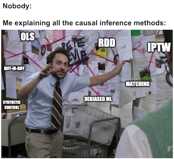
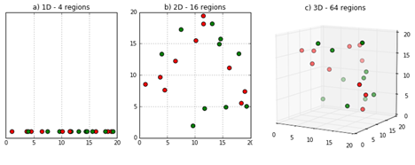

import warnings
warnings.filterwarnings('ignore')
import pandas as pd
import numpy as np
from matplotlib import style
from matplotlib import pyplot as plt
import statsmodels.formula.api as smf
import graphviz as gr
%matplotlib inline
style.use("fivethirtyeight")第十章: 匹配
回归到底在做什么？
到目前为止，我们已经看到，当我们进行测试与控制比较时，回归在控制附加变量方面做得非常出色。如果我们有独立性，\((Y_0, Y_1)\perp T | X\)，那么回归可以通过控制 X 来识别 ATE。回归的方式有点神奇。为了对它有一些直观的了解，让我们记住所有变量 X 都是虚拟变量的情况。如果是这种情况，回归会将数据划分为虚拟单元格并计算测试和控制之间的平均差异。这种均值差异使 Xs 保持不变，因为我们是在 X dummy 的固定单元格中进行的。就好像我们在做 \(E[Y|T=1] - E[Y|T=0] | X=x\)，其中 \(x\) 是一个虚拟单元（所有虚拟单元例如设置为 1）。然后回归结合每个单元格中的估计以产生最终的 ATE。这样做的方法是将权重应用到与该组处理的方差成正比的单元格。
举个例子，假设我试图估计一种药物的效果，我有 6 个男人和 4 个女人。 我的反应变量是住院天数，我希望我的药物可以降低住院天数。 对男性而言，真正的因果效应是-3，因此该药物将住院时间缩短了3 天。 对于女性，它是-2。 更有趣的是，男性更容易受到这种疾病的影响，并且在医院停留的时间更长。 他们也得到了更多的药物。 6 名男性中只有 1 人没有得到药物。 另一方面，女性对这种疾病的抵抗力更强，所以她们在医院的时间更少。 50% 的女性得到了这种药物。
drug_example = pd.DataFrame(dict(
sex= ["M","M","M","M","M","M", "W","W","W","W"],
drug=[1,1,1,1,1,0, 1,0,1,0],
days=[5,5,5,5,5,8, 2,4,2,4]
))请注意，治疗和对照的简单比较会产生负面影响，即药物似乎不如实际有效。 这是意料之中的，因为我们已经省略了性别混淆因素。 在这种情况下，估计的 ATE 小于真实的 ATE，因为男性服用的药物更多，更容易受到疾病的影响。
drug_example.query("drug==1")["days"].mean() - drug_example.query("drug==0")["days"].mean()-1.1904761904761898由于男性的真实效果是 -3，女性的真实效果是 -2，ATE 应该是
\[ ATE=\dfrac{(-3*6) + (-2*4)}{10}=-2.6 \]
该估计是通过 1) 将数据划分为混杂单元格，在这种情况下为男性和女性，2) 估计对每个单元格的影响，以及 3) 将估计值与加权平均值相结合，其中权重是样本量单元格或协变量组。如果我们的数据中男性和女性的大小完全相同，则 ATE 估计值将正好在两组 ATE 的中间，即 -2.5。由于我们的数据集中男性多于女性，因此 ATE 估计值更接近于男性的 ATE。这称为非参数估计，因为它没有假设数据是如何生成的。
如果我们使用回归控制性别，我们将添加线性假设。回归还将数据划分为男性和女性，并估计对这两个组的影响。到现在为止还挺好。然而，当谈到组合对每组的影响时，它并没有按样本量来衡量它们。相反，回归使用与该组中治疗的方差成比例的权重。在我们的案例中，男性的治疗差异小于女性，因为对照组中只有一名男性。准确地说，男性的干预变量 T的 方差为 \(0.139=1/6*(1 - 1/6)\)，女性样本的方差则为 \(0.25=2/4*(1 - 2/4)\)。因此，在我们的示例中，回归将赋予女性更高的权重，并且 ATE 将更接近于 -2 的女性 ATE。
smf.ols('days ~ drug + C(sex)', data=drug_example).fit().summary().tables[1]| coef | std err | t | P>|t| | [0.025 | 0.975] | |
|---|---|---|---|---|---|---|
| Intercept | 7.5455 | 0.188 | 40.093 | 0.000 | 7.100 | 7.990 |
| C(sex)[T.W] | -3.3182 | 0.176 | -18.849 | 0.000 | -3.734 | -2.902 |
| drug | -2.4545 | 0.188 | -13.042 | 0.000 | -2.900 | -2.010 |
这个结果对于虚拟变量来说更直观，但是，回归有它自己独特的运作方式，它在估计连续变量效果的同时假设了连续变量不变。同样对于连续变量，ATE 将指向协变量具有更多方差的方向。
所以我们已经看到回归有它的特质。它是线性的、参数化的、喜欢高方差特征……这可能是好是坏，具体取决于上下文。因此，重要的是要了解我们可以用来控制混淆因素的其他技术。它们不仅是你手边因果工具中的一个额外工具，而且了解处理混淆的不同方法可以扩展我们对问题的理解。出于这个原因，我现在向您介绍 子分类估计器（Subclassification Estimator）！
子分类估计器

如果我们想要估计一些因果效应，比如工作培训对收入的影响，并且该情况下的干预不是随机分配的时候，我们需要注意混淆因素。比如，因为可能只有更有求职动力的人才会参加培训，因此无论培训如何，他们都会获得更高的收入。我们需要估计培训计划在动机水平大致相同的小组以及我们可能存在的任何其他混淆因素中的效果。
更一般的情况下，如果我们想要估计一些因果效应，但由于某些变量 X 带来的混淆而很难做到时，我们需要做的是在 X 相同的小组内进行干预与对照的比较。如果我们具备条件独立 \((Y_0, Y_1)\perp T | X\)，那么我们可以将 ATE 写成如下。
\[ ATE = \int(E[Y|X, T=1] - E[Y|X, T=0])dP(x) \]
这个积分的作用是遍历特征 X 分布的所有空间，计算所有这些微小空间的均值差异，并将所有内容组合到 ATE 中。另一种看待这一点的方法是考虑一组离散的特征。在这种情况下，我们可以说特征 X 对 K 个不同的单元格 \(\{X_1, X_2, ..., X_k\}\) 进行计算，我们正在做的是计算每个单元格中的干预效果并结合他们进入ATE。在这种离散情况下，将积分转换为和，我们可以推导出子分类估计量
\[ \hat{ATE} = \sum^K_{i=0}(\bar{Y}_{k1} - \bar{Y}_{k0}) * \dfrac{N_k}{N} \]
其中变量上的横线符号代表被干预样本的表现平均值，\(Y_{k1}\)，和未干预样本的表现平均值，\(Y_{k0}\)，单元格 k 和 \(N_{k}\) 是同一单元格中的观察数。如您所见，我们正在计算每个单元格的本地 ATE，并使用加权平均值将它们组合起来，其中权重是单元格的样本大小。在我们上面的医学例子中，这将是第一个估计，它给了我们-2.6。
匹配估计器
子分类估计器在实践中用得不多（我们很快就会明白为什么，主要是因为维度诅咒这个原因），但它让我们很好地、直观地了解了因果推理估计器应该做什么，以及它应该如何控制混淆因素。这使我们能够探索其他类型的估计器，例如匹配估计器。
这个想法非常相似。由于某种混淆因素 X 使得经过干预的和未干预的样本单元最初无法比较，我可以通过将每个经过干预的单元与类似的未经干预的单元匹配来做到这一点。这就像我为每个干预单元找到一个未经干预的双胞胎。通过进行这样的比较，干预过的和未经干预的样本再次变得可比较。
举个例子，假设我们试图估计一个练习生训练计划对收入的影响。这是练习生的基本情况：
trainee = pd.read_csv("./data/trainees.csv")
trainee.query("trainees==1")| unit | trainees | age | earnings | |
|---|---|---|---|---|
| 0 | 1 | 1 | 28 | 17700 |
| 1 | 2 | 1 | 34 | 10200 |
| 2 | 3 | 1 | 29 | 14400 |
| 3 | 4 | 1 | 25 | 20800 |
| 4 | 5 | 1 | 29 | 6100 |
| 5 | 6 | 1 | 23 | 28600 |
| 6 | 7 | 1 | 33 | 21900 |
| 7 | 8 | 1 | 27 | 28800 |
| 8 | 9 | 1 | 31 | 20300 |
| 9 | 10 | 1 | 26 | 28100 |
| 10 | 11 | 1 | 25 | 9400 |
| 11 | 12 | 1 | 27 | 14300 |
| 12 | 13 | 1 | 29 | 12500 |
| 13 | 14 | 1 | 24 | 19700 |
| 14 | 15 | 1 | 25 | 10100 |
| 15 | 16 | 1 | 43 | 10700 |
| 16 | 17 | 1 | 28 | 11500 |
| 17 | 18 | 1 | 27 | 10700 |
| 18 | 19 | 1 | 28 | 16300 |
下面是非练习生的基本情况：
trainee.query("trainees==0")| unit | trainees | age | earnings | |
|---|---|---|---|---|
| 19 | 20 | 0 | 43 | 20900 |
| 20 | 21 | 0 | 50 | 31000 |
| 21 | 22 | 0 | 30 | 21000 |
| 22 | 23 | 0 | 27 | 9300 |
| 23 | 24 | 0 | 54 | 41100 |
| 24 | 25 | 0 | 48 | 29800 |
| 25 | 26 | 0 | 39 | 42000 |
| 26 | 27 | 0 | 28 | 8800 |
| 27 | 28 | 0 | 24 | 25500 |
| 28 | 29 | 0 | 33 | 15500 |
| 29 | 31 | 0 | 26 | 400 |
| 30 | 32 | 0 | 31 | 26600 |
| 31 | 33 | 0 | 26 | 16500 |
| 32 | 34 | 0 | 34 | 24200 |
| 33 | 35 | 0 | 25 | 23300 |
| 34 | 36 | 0 | 24 | 9700 |
| 35 | 37 | 0 | 29 | 6200 |
| 36 | 38 | 0 | 35 | 30200 |
| 37 | 39 | 0 | 32 | 17800 |
| 38 | 40 | 0 | 23 | 9500 |
| 39 | 41 | 0 | 32 | 25900 |
如果我对均值做一个简单比较，我们会发现那些练习生相比非练习生赚的更少。
trainee.query("trainees==1")["earnings"].mean() - trainee.query("trainees==0")["earnings"].mean()-4297.49373433584但是，如果我们看一下上面的表格，我们会注意到练习生比非练习生年轻得多，这表明年龄可能是一个混淆因素。让我们使用年龄匹配来尝试纠正这一点。我们将从接受干预的人那里取出1号单元，并将其与27号单元配对，因为两者都是28岁。对于单元2，我们将它与单元34配对，而单元3则与单元37配对，对于单元4我们将它与单元35配对…当涉及到5号单元时，我们需要从未接受干预的人中找到29岁的人，但那是37号单元，它已经配对了。这其实不是问题，因为我们可以多次使用相同的单元。如果可以匹配的单位超过1个，我们可以在它们之间随机选择。
这是前 7 个单元在匹配后的数据集中的样子：
# make dataset where no one has the same age
unique_on_age = (trainee
.query("trainees==0")
.drop_duplicates("age"))
matches = (trainee
.query("trainees==1")
.merge(unique_on_age, on="age", how="left", suffixes=("_t_1", "_t_0"))
.assign(t1_minuts_t0 = lambda d: d["earnings_t_1"] - d["earnings_t_0"]))
matches.head(7)| unit_t_1 | trainees_t_1 | age | earnings_t_1 | unit_t_0 | trainees_t_0 | earnings_t_0 | t1_minuts_t0 | |
|---|---|---|---|---|---|---|---|---|
| 0 | 1 | 1 | 28 | 17700 | 27 | 0 | 8800 | 8900 |
| 1 | 2 | 1 | 34 | 10200 | 34 | 0 | 24200 | -14000 |
| 2 | 3 | 1 | 29 | 14400 | 37 | 0 | 6200 | 8200 |
| 3 | 4 | 1 | 25 | 20800 | 35 | 0 | 23300 | -2500 |
| 4 | 5 | 1 | 29 | 6100 | 37 | 0 | 6200 | -100 |
| 5 | 6 | 1 | 23 | 28600 | 40 | 0 | 9500 | 19100 |
| 6 | 7 | 1 | 33 | 21900 | 29 | 0 | 15500 | 6400 |
请注意，最后一列的收益差额为已干预单元和与其匹配的未干预单位之间的差异。如果我们取最后一列的平均值，我们得到控制年龄情况下的ATET估计值。请注意，与之前我们使用简单均值差值的估计值相比，该估计值现在显著为正。
matches["t1_minuts_t0"].mean()2457.8947368421054但这是一个人为设置的例子，只是为了引入匹配这个概念。实际上，我们通常有多个特征，并且单元间也是不能完全可以匹配。在这种情况下，我们必须定义一些接近度的测量值，以比较单元之间的接近程度。一个常见的指标是欧几里得范数 \(||X_i - X_j||\)。 但是，这种差异在特征的大小变化时并不是保持不变。这意味着，与收入等量纲更大的特征相比，在计算此范数时，类似年纪这种以十分之一为单位的特征的重要性要小得多。因此，在应用范数之前，我们需要缩放特征的值，使它们具有大致相同的比例。
定义了距离的测度指标后，我们现在可以将匹配定义为寻找要匹配的样本的最近邻居。在数学方面，我们可以通过以下方式编写匹配估计器：
\[ \hat{ATE} = \frac{1}{N} \sum^N_{i=0}(2T_i - 1)\big(Y_i - Y_{jm}(i)\big) \]
其中 \(Y_{jm}(i)\) 是来自与 \(Y_i\) 最相似的另一个干预组的样本。我们这样做\(2T_i - 1\)次，并以两种方式匹配：从干预组匹配对照组样本，以及从对照组匹配干预样本。
为了测试这个估计器，让我们考虑一个医学示例。跟上次一样，我们想找到药物对病人恢复时间长短的效果。不幸的是，这种影响被疾病的严重程度、性别以及年龄所混淆。我们有理由相信，病情更严重的患者接受药物治疗的机会更高。
med = pd.read_csv("./data/medicine_impact_recovery.csv")
med.head()| sex | age | severity | medication | recovery | |
|---|---|---|---|---|---|
| 0 | 0 | 35.049134 | 0.887658 | 1 | 31 |
| 1 | 1 | 41.580323 | 0.899784 | 1 | 49 |
| 2 | 1 | 28.127491 | 0.486349 | 0 | 38 |
| 3 | 1 | 36.375033 | 0.323091 | 0 | 35 |
| 4 | 0 | 25.091717 | 0.209006 | 0 | 15 |
如果我们看一个简单的均值差，\(E[Y|T=1]-E[Y|T=0]\)，我们得到受到治疗的病人平均需要比未接受治疗的病人多16.9天才能恢复。这可能是由于混淆，因为我们不认为药物会对患者造成伤害。
med.query("medication==1")["recovery"].mean() - med.query("medication==0")["recovery"].mean()16.895799546498726为了纠正这个偏差，我们需要使用匹配来控制X。首先，我们一定要记得缩放我们的特征，否则，类似年龄这样的特征在我们计算两个样本点间距离的时候，会比严重性这种特征有更高的重要性。我们可以通过对特征进行归一化的方式来解决这个问题。
# scale features
X = ["severity", "age", "sex"]
y = "recovery"
med = med.assign(**{f: (med[f] - med[f].mean())/med[f].std() for f in X})
med.head()| sex | age | severity | medication | recovery | |
|---|---|---|---|---|---|
| 0 | -0.996980 | 0.280787 | 1.459800 | 1 | 31 |
| 1 | 1.002979 | 0.865375 | 1.502164 | 1 | 49 |
| 2 | 1.002979 | -0.338749 | 0.057796 | 0 | 38 |
| 3 | 1.002979 | 0.399465 | -0.512557 | 0 | 35 |
| 4 | -0.996980 | -0.610473 | -0.911125 | 0 | 15 |
现在，到匹配本身。我们将使用来自 Sklearn 的 K 最近邻算法，而不是编写匹配函数。此算法通过在估计或训练集中查找最近的数据点来进行预测。
为了匹配，我们需要其中的2个函数。一个是; mt0 ，它将存储未干预的样本，并在被要求时在未处理的点中找到匹配项。另一个，mt1，将存储被干预的样本，并在需要时在被干预的样本点中找到匹配项。在此拟合步骤之后，我们可以使用这些 KNN 模型进行预测，从而是我们的匹配样本。
from sklearn.neighbors import KNeighborsRegressor
treated = med.query("medication==1")
untreated = med.query("medication==0")
mt0 = KNeighborsRegressor(n_neighbors=1).fit(untreated[X], untreated[y])
mt1 = KNeighborsRegressor(n_neighbors=1).fit(treated[X], treated[y])
predicted = pd.concat([
# find matches for the treated looking at the untreated knn model
treated.assign(match=mt0.predict(treated[X])),
# find matches for the untreated looking at the treated knn model
untreated.assign(match=mt1.predict(untreated[X]))
])
predicted.head()| sex | age | severity | medication | recovery | match | |
|---|---|---|---|---|---|---|
| 0 | -0.996980 | 0.280787 | 1.459800 | 1 | 31 | 39.0 |
| 1 | 1.002979 | 0.865375 | 1.502164 | 1 | 49 | 52.0 |
| 7 | -0.996980 | 1.495134 | 1.268540 | 1 | 38 | 46.0 |
| 10 | 1.002979 | -0.106534 | 0.545911 | 1 | 34 | 45.0 |
| 16 | -0.996980 | 0.043034 | 1.428732 | 1 | 30 | 39.0 |
匹配完成后，我们就可以应用匹配估计器的公式了： \[ \hat{ATE} = \frac{1}{N} \sum^N_{i=0} (2T_i - 1)\big(Y_i - Y_{jm}(i)\big) \]
np.mean((2*predicted["medication"] - 1)*(predicted["recovery"] - predicted["match"]))-0.9954使用这种匹配，我们可以看到药物的效果不再是增加恢复所需时间。这意味着，控制X后，药物平均将恢复时间减少约1天。这已经是一个巨大的改进，毕竟之前的有偏估计可是预测恢复时间需要增加16.9天。
但是，我们仍然可以做得更好。
匹配偏差
事实证明，我们上面设计的匹配估计器还是有偏差的。为了看到这一点，让我们考虑ATE估计器，而不是ATE，只是因为它写起来更简单。其原理也适用于ATE。
\[ \hat{ATET} = \frac{1}{N_1}\sum(Y_i - Y_j(i)) \]
其中 \(N_1\) 是接受治疗的个体数，\(Y_j(i)\) 是未经治疗的单元 i 的匹配。为了检查偏差，我们所做的是希望我们可以应用中心极限定理，以便该定理收敛到平均值为零的正态分布。
\[ \sqrt{N_1}(\hat{ATET} - ATET） \]
但是，这并不总是发生。如果我们定义给定 X 的均值结果，\(\mu_0(x)=E[Y|X=x， T=0]\)，我们将得到如下结果：（顺便说一句，我省略了证明，因为它不是这里的重点）。
\[ E[\sqrt{N_1}(\hat{ATET} - ATET)] = E[\sqrt{N_1}(\mu_0(X_i) - \mu_0(X_j(i)))] \]
现在，\(\mu_0(X_i) - \mu_0(X_j(i))\) 并不是那么容易理解，所以让我们更仔细地看一下。 \(\mu_0(X_i)\) 是未处理的处理单元的结果 Y 值。因此，它是单元 i 的反事实结果 \(Y_0\)。 \(\mu_0(X_j(i))\) 是未处理单元 j 的结果，它是单元 i 的匹配项。因此，它也是 \(Y_0\) ，但现在用于单元 j。只有这一次，这是一个事实结果，因为 j 在未处理组中。现在，因为 j 和 i 只是相似，但并不相同，所以这很可能不为零。换句话说，\(X_i \approx X_j\)。所以，\(Y_{0i} \approx Y_{0j}\)。
随着我们增加样本量，将会有更多的单元来匹配，所以单元 i 和它的匹配 j 之间的差异也会变得更小。但是这种差异会慢慢收敛到零。结果 \(E[\sqrt{N_1}(\mu_0(X_i) - \mu_0(X_j(i)))]\) 可能不会收敛到零，因为 \(\sqrt{N_1}\ \) 增长快于 \\((\mu_0(X_i) - \mu_0(X_j(i)))\) 减少。
当匹配差异很大时，就会出现偏差。幸运的是，我们知道如何纠正它。每个观察都将 \((\mu_0(X_i) - \mu_0(X_j(i)))\) 贡献给偏差，所以我们需要做的就是从估计器中的每个匹配比较中减去这个数量。为此，我们可以将 \(\mu_0(X_j(i))\) 替换为对这个数量 \(\hat{\mu_0}(X_j(i))\) 的某种估计，它可以可以通过线性回归等模型获得。这会将 ATET 估计器更新为以下等式
\[ \hat{ATET} = \frac{1}{N_1}\sum \big((Y_i - Y_{j(i)}) - (\hat{\mu_0}(X_i) - \hat{\mu_0}(X_{j(i)}))\big) \]
where \(\hat{\mu_0}(x)\) is some estimative of \(E[Y|X, T=0]\), like a linear regression fitted only on the untreated sample.
from sklearn.linear_model import LinearRegression
# fit the linear regression model to estimate mu_0(x)
ols0 = LinearRegression().fit(untreated[X], untreated[y])
ols1 = LinearRegression().fit(treated[X], treated[y])
# find the units that match to the treated
treated_match_index = mt0.kneighbors(treated[X], n_neighbors=1)[1].ravel()
# find the units that match to the untreatd
untreated_match_index = mt1.kneighbors(untreated[X], n_neighbors=1)[1].ravel()
predicted = pd.concat([
(treated
# find the Y match on the other group
.assign(match=mt0.predict(treated[X]))
# build the bias correction term
.assign(bias_correct=ols0.predict(treated[X]) - ols0.predict(untreated.iloc[treated_match_index][X]))),
(untreated
.assign(match=mt1.predict(untreated[X]))
.assign(bias_correct=ols1.predict(untreated[X]) - ols1.predict(treated.iloc[untreated_match_index][X])))
])
predicted.head()一个直接出现的问题是：这不是破坏了匹配这个出发点吗？如果无论如何我都必须运行线性回归，我为什么不一直就使用回归，而不是这个复杂的匹配模型。有这个想法很正常，所以我应该花一些时间来回答它。
首先，我们拟合的这个线性回归并没有外推干预维度来获得干预效果。相反，它的目的只是为了纠正偏差。这里的线性回归是局部的，从某种意义上说，如果它看起来像未干预的，它不会尝试查看干预后的情况。它没有进行任何推断。这是留给匹配的部分。估计器的核心仍然是匹配组件。我想在这里说明的一点是，OLS方法相对这个估计量本身其实是一个次要考虑的因素。
第二点是匹配是一个非参数估计。它不假设线性或任何类型的参数模型。因此，它比线性回归更灵活，并且可以在线性回归不会的情况下工作，即非线性非常强的情况。
这是否意味着您应该只使用匹配？嗯，这是一个棘手的问题。 Alberto Abadie 提出了一个理由，认为更应该偏好匹配方法。它更灵活，一旦你有了代码，运行起来也同样简单。我并不完全相信这一点。至少，Abadie 花了很多时间研究和开发估计器（是的，他是帮助匹配算法发展到现在这个阶段的科学家之一），所以他显然对匹配这种方法有个人的偏好。其次，线性回归的简单性在匹配中是看不到的。线性回归比匹配更容易掌握“保持其他一切不变”的偏导数数学。但这只是我的偏好。老实说，这个问题没有明确的答案。无论如何，回到我们的例子。
使用偏差校正公式，我得到以下 ATE 估计。
np.mean((2*predicted["medication"] - 1)*((predicted["recovery"] - predicted["match"])-predicted["bias_correct"]))当然，我们还需要围绕这个测量放置一个置信区间，但现在数学理论已经足够了。 在实践中，我们可以简单地使用别人的代码并导入一个匹配的估计器。 这是来自python库 causalinference 的一个。
from causalinference import CausalModel
cm = CausalModel(
Y=med["recovery"].values,
D=med["medication"].values,
X=med[["severity", "age", "sex"]].values
)
cm.est_via_matching(matches=1, bias_adj=True)
print(cm.estimates)最后，我们可以自信地说，我们的药物确实可以减少人们在医院的时间。 ATE 估计值比我的略低，所以可能我的代码并不完美，所以这是尽量使用别人的成熟代码，而不是自己从头构建代码的另一个原因。
在我们结束这个话题之前，我只是想稍微解释一下匹配偏差的原因。我们看到当单元和它的匹配不太相似时，匹配是有偏差的。但是是什么导致它们如此不同呢？
维度的诅咒
事实证明，答案非常简单直观。很容易找到与一些特征相匹配的人，比如性别。但如果我们添加更多特征，如年龄、收入、出生城市等，找到匹配项就变得越来越难。更一般地说，我们拥有的特征越多，单位与其匹配之间的距离就越大。
这不仅仅是伤害匹配估计器的事情。它与我们之前看到的子分类估计器相关联。早期，在那个人为的医学示例中，对于男人和女人，构建子分类估计器非常容易。那是因为我们只有两个牢房：男人和女人。但如果我们有更多会发生什么？假设我们有 2 个连续的特征，比如年龄和收入，我们设法将它们离散成 5 个桶。这将为我们提供 25 个单元格，或 \(5^2\)。如果我们有 10 个协变量，每个协变量有 3 个桶呢？好像不多吧？好吧，这会给我们 59049 个单元格，或 \(3^{10}\)。很容易看出这如何很快就变得不成比例。这是所有数据科学中普遍存在的现象，被称为维度的诅咒！！！

图片来源：https://deepai.org/machine-learning-glossary-and-terms/curse-of-dimensionality尽管它的名字吓人且自命不凡，但这仅意味着填充特征空间所需的数据点数量随着特征或维度的数量呈指数增长。因此，如果需要 X 个数据点来填充例如 3 个特征空间的空间，则需要成倍增加的点来填充 4 个特征空间。
在子分类估计器的上下文中，维数灾难意味着如果我们有很多特征，它就会受到影响。许多特征意味着 X 中有多个单元格。如果有多个单元格，其中一些单元格的数据将非常少。其中一些甚至可能只进行了治疗或仅进行了控制，因此无法估计那里的 ATE，这会破坏我们的估计量。在匹配上下文中，这意味着特征空间将非常空间并且单元将彼此相距很远。这将增加匹配之间的距离并导致偏差问题。
至于线性回归，它实际上很好地处理了这个问题。它所做的是将所有特征 X 投影到一个单一的 Y 维度中。然后，它对该投影进行处理和控制比较。因此，以某种方式，线性回归执行某种降维来估计 ATE。它相当优雅。
大多数因果模型也有一些方法来处理维度灾难。我不会一直重复自己，但在看它们时应该牢记这一点。例如，当我们在下一节中处理倾向得分时，试着看看它是如何解决这个问题的。
关键思想
我们已经开始了解线性回归的作用以及它如何帮助我们识别因果关系。也就是说，我们理解回归可以看作是将数据集划分为单元，计算每个单元中的 ATE，然后将单元的 ATE 组合成整个数据集的单个 ATE。
从那里，我们推导出了一个非常通用的带有子分类的因果推理估计器。我们看到该估计器在实践中如何不是很有用，但它为我们提供了一些关于如何解决因果推理估计问题的有趣见解。这让我们有机会讨论匹配估计器。
通过查看每个处理单元并找到与其非常相似并且对于未处理单元类似的未处理对来匹配混杂因素的对照。我们看到了如何使用 KNN 算法来实现这个方法，以及如何使用回归来消除它的偏差。最后，我们讨论了匹配和线性回归之间的区别。我们看到了匹配如何是一种非参数估计器，它不像线性回归那样依赖于线性。
最后，我们深入研究了高维数据集的问题，并且我们看到了因果推理方法如何受到它的影响。